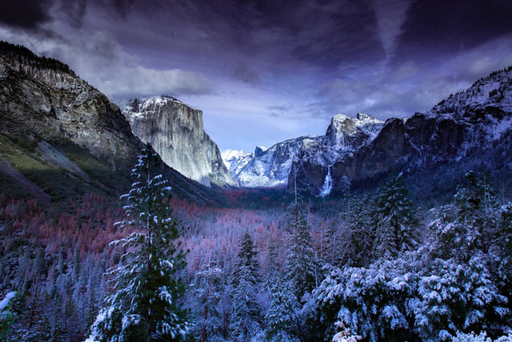

Please visit the link below to learn more about National Parks and the National Park Service. Enjoy!!
National Park Home PageIn 1872, President Ulysses S. Grant signed the Yellowstone National Park Protection Act. This was the birth of the first National Park.
1916 marked the year President Woodrow Wilson established National Park Service. He wanted to consolidate management of America's federal parklands
John Muir was a writer turned mountaineer. He could be considered the Father of National Parks because of his influence, he was an early advocated for preservation of wilderness
West Virginia is set to become the next state to open a new National Park. It will be located in the area of the New River Gorge, This area is known for its white water and excellent hiking. It is a beautiful state that is often overlooked.
The pandemic has effected everyone and National Parks are no different. At the height of the pandemic many National Parks saw their doors close to the public. As the situation at home got better, we saw parks slowly start to open up. If even for a seldom few. The latter of half of the year saw attendances rise as lots of people vacationaing sought the outdoors as ways to enjoy leisure in socially safe distances
Two years ago, my girlfriend and I quit our jobs and hit the road. We took her car and drove over 13,000 miles in alittle over a month. We wanted to see why America was nicknamed "America the BeautifuL". To be so lucky to have these gorgeous landscapes in our backyards. This experience made me feel proud to be American.
We started in Washington D.C. and drove westward. We stopped to see friends along the way in different cities but a majority of time was spent driving through national parks. We hit over 23 out of the 63 National Parks and spent atleast a day to half a day in each. We lived out of my girlfriends car and camped along the way. My one regret is we didn't have more time. I would love to make this adventure happen again.
©2021 Lab 2- Basic HTML Structure- National Park Site